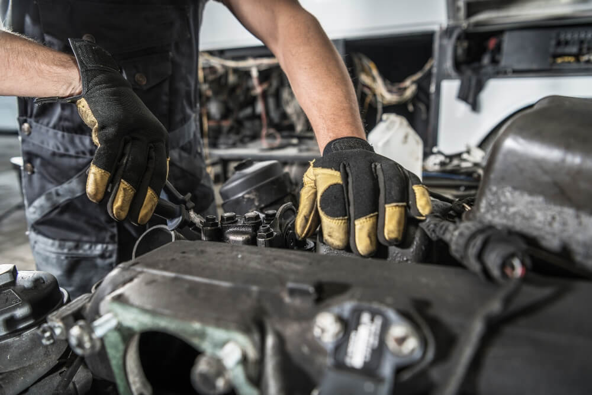

Inicio
El mejor servicio que encontrarás
"Calidad significa hacer las cosas bien cuando nadie te está viendo"
¡Empieza Ya!Mantenimiento Preventivo
Realizamos revisiones periódicas para prevenir fallos y averías.
- Inspección de equipos
- Lubricación
- Ajuste de componentes
- Limpieza
- Monitoreo de indicadores clave
Mantenimiento Correctivo

Reparamos fallos y averías de forma rápida y eficiente.
- Diagnóstico de problemas
- Sustitución de piezas dañadas
- Reparación de componentes
- Calibración de equipos
- Pruebas de funcionamiento
Clientes Satisfechos
"Desde que empezamos en AQPSERVICE, obtenemos resultados increíbles. Ahora hemos llegado a un gran número de clientes."
Pedro Casillas
"AQPSERVICE me ha ayudado a mejorar la eficiencia de mi negocio y a aumentar mis ganancias."
Jorge Valdivia